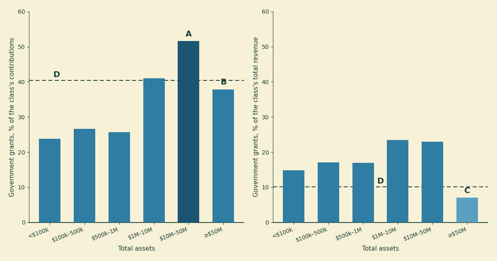
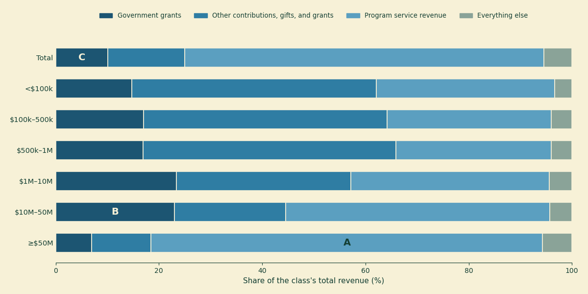

Two-fifths government: who the $305 billion actually goes to
Yesterday’s reconciliation post ended up measuring a number this series had twice gotten wrong by inference: how much of the money charities report as contributions comes from government. The IRS’s published tax year 2022 table answers it directly — $305.1 billion of $756.1 billion, 40.3 percent. Two-fifths of the contributed income on the sector’s full Form 990s is government money, and we used it to close a correction and moved on.
A number that size deserves better than a cameo in someone else’s correction. Whose two-fifths is it? A charity with a food pantry and a charity with a teaching hospital both report a “government grants” line, and the sector-wide 40.3 percent describes neither of them — which is the lesson this series keeps relearning: an aggregate wearing one name is usually several populations wearing one costume. The same published table that settled the total also cuts it six ways by organization size, and this post reads the rest of it. Two findings, one of each kind: the dependence is real and concentrated in the middle of the size distribution — pool the dollars of the $10M–50M asset class and a majority of its contributed income is government — and the number everyone will be tempted to quote is a floor, because a major channel of government money into charities is defined out of the line entirely.
Where the number comes from
Everything here is computed from two spreadsheets the IRS publishes as part of its Statistics of Income program: Table 1, Form 990 returns of 501(c)(3) organizations by asset size, and Table 3, the same items for 501(c)(3) through 501(c)(9) organizations by code section — both for tax year 2022, the most recent published, and both weighted estimates from a sample, not a census.
That sourcing is a change for this blog, and it is forced. Our usual per-filer file — the SOI annual extract behind every sector post here — simply does not carry the government grants line. Form 990 Part VIII line 1e exists on every return, but the extract omits it, so nothing in this post can be computed for an individual organization from that file, and none of our usual medians and distributions are available — a published aggregate table gives you the cells it gives you, in the size classes it chose, and nothing else. Within those limits, here is what it shows.
Who the $305 billion goes to
Figure 1 is the post. The left panel asks, for each of six asset-size classes, what share of the class’s contributions came from government; the right panel asks the same of its total revenue.

Figure 1. Government grants to 501(c)(3) organizations by the filer’s total assets, tax year 2022, from IRS SOI Table 1. Left panel: share of each class’s contributions, gifts, and grants. Right panel: share of each class’s total revenue. A is the $10M–50M class, the only one whose pooled contributed dollars are majority government grants, at 51.6 percent. B is the largest class (assets of $50M or more) at 37.9 percent of contributions. C is that same class at 7.0 percent of total revenue — the lowest of any class, and the pivot on which the second half of this post turns. D marks the all-size figures: 40.3 percent of contributions, 10.1 percent of revenue.
Three shapes worth naming, and Table 1 has the exact figures behind them.
The dependence peaks in the middle. Charities with under $1M in assets draw about a quarter of their pooled contributions from government — 23.8, 26.6, and 25.7 percent across the three smallest classes. Then it climbs: 41.0 percent at $1M–10M, and 51.6 percent at $10M–50M (marker A). Pool the dollars of those roughly 24,000 filers and the state, in its various forms, put in more than every private donor, foundation, and federated campaign combined. And a pooled, dollar-weighted class ratio is all that is: this table has no medians, so it cannot say what the typical $10M–50M charity looks like — a minority of heavily granted organizations can carry a class ratio the same way a few giants carry the sector aggregate. The class’s dollars are majority government; how many of its members are, this data cannot say.
The dollars go to the top anyway. Shares are one thing, checks are another. The 10,871 organizations with $50M or more in assets — 4.4 percent of returns — collect $170.0 billion, 55.7 percent of all government grant money; the two classes above $10M together collect 80.2 percent. Meanwhile the 130,188 filers below $1M in assets — 52.3 percent, a majority of the full-Form-990 returns this table covers — split 3.4 percent of it. (The actual small-charity majority, the 990-EZ and 990-N filers, is not in this table at all.) Whatever government grants are, they are not a small-charity program.
And yet the giants barely register on the revenue panel. The same largest class that banks most of the money shows government grants at just 7.0 percent of its total revenue (marker C) — half the small classes’ figure, a third of the middle’s. Nothing like a paradox once you see the denominator: this class runs on program service revenue, 75.8 percent of everything it takes in. Which brings us to what that panel is actually measuring.
| Total assets | Returns | Gov. grants ($B) | Share of gov. $ | % of contributions | % of revenue |
|---|---|---|---|---|---|
| Under $100k | 30,333 | 1.6 | 0.5% | 23.8 | 14.8 |
| $100k–500k | 62,017 | 4.8 | 1.6% | 26.6 | 17.1 |
| $500k–1M | 37,838 | 4.1 | 1.4% | 25.7 | 16.9 |
| $1M–10M | 83,692 | 49.8 | 16.3% | 41.0 | 23.4 |
| $10M–50M | 24,040 | 74.8 | 24.5% | 51.6 | 23.0 |
| $50M or more | 10,871 | 170.0 | 55.7% | 37.9 | 7.0 |
| All | 248,791 | 305.1 | 100% | 40.3 | 10.1 |
Table 1. Government grants by asset size, tax year 2022, IRS SOI Table 1; dollar figures in billions. The SOI sample is stratified by size — the largest filers are sampled at or near certainty, the smallest at low rates — so read the sub-$1M rows as noisier than the rest.
One thing these tables cannot tell us is what kind of charity sits in each class — Table 1 has no subsector cut, so whether the mid-size peak is human-services organizations living on public grants, or something else, is a question this data cannot answer. The Urban Institute’s survey work does break government funding out by subsector, and readers who know that literature will know more about the composition than these two spreadsheets do.
The line counts giving, not buying
Now the part that keeps the 40.3 percent from meaning what it will be quoted to mean.
“Government grants” on a Form 990 is a defined term, and the definition has an edge running through it. Per the Form 990 instructions, a payment from a government lands on the contributions line (Part VIII line 1e) when its purpose is primarily to provide a direct benefit to the public — a grant to run a shelter, say. But when the government is paying primarily for its own direct needs, or paying as the customer for a service delivered to a specific person, that is not a contribution at all. It is program service revenue, line 2, sitting in the same column as tuition and ticket sales. The Schedule A instructions draw the same line for the public support test, citing a 1983 revenue ruling: Medicare and Medicaid payments are gross receipts from patients, not support from the government that writes the check.
So a hospital system collecting a billion dollars of Medicare money reports zero of it as government grants. A university’s federal research contracts, a human-services agency’s per-bed reimbursements — government-as-customer money in general — flows into a line that these SOI tables do not split by payer. (The nearest thing to an exception sits elsewhere in the return: hospital filers report some Medicaid-related revenue detail on Schedule H, but that schedule feeds none of the tables used here.) Figure 2 shows how much of each class’s income sits in the block these tables cannot split.

Figure 2. What each class’s revenue is made of, tax year 2022: government grants, other contributions, program service revenue, and everything else (investment income, royalties, net gains, and the rest). A is the largest class’s program service revenue — 75.8 percent of its income, a block that contains its Medicare, Medicaid, and government contract receipts if it has them, indistinguishable in these tables from patient bills and tuition. B is the $10M–50M class’s government grants block, 23.0 percent of revenue. C is the all-size total’s, 10.1 percent.
This is why the right panel of Figure 1 collapses at the top, and why that collapse should not be read as independence. The giants’ 7.0 percent is 7.0 percent of a denominator that is three-quarters program service revenue — and whether government money makes up a little of that block or most of it is exactly what the filing does not say. The honest reading is not “big charities don’t depend on government.” It is: for the organizations holding most of the money in this table, this data cannot measure government dependence at all — it can only measure the granted part, and that part is a floor.
The survey evidence points the same direction. The Urban Institute’s Nonprofit Trends and Impacts study — which asks organizations about government grants and contracts, rather than reading the 1e line — found that in 2023 two-thirds of nonprofits received at least one government grant or contract, that the average nonprofit drew about a quarter of its revenue from government sources, and that roughly two in ten drew more than half. Those figures are not comparable to ours in any strict sense. The panel covers operating public charities with at least $50,000 in both expenses and revenue, and excludes hospitals, higher education, schools, foundations, and houses of worship — which removes precisely the organizations whose government money this post says is least visible; an organization-weighted average is not a dollar-weighted one; and “government sources” is a wider net than line 1e. But that makes the corroboration stronger, not weaker: even with the big program-service institutions taken out of the frame, counting the buying alongside the giving still puts government at a quarter of the average nonprofit’s revenue. The comparison is loose by construction; the direction is not.
The other exemption sections, briefly
Table 3 runs the same items across the rest of the 501(c) family, and it makes one point emphatically: government grant money is a charity phenomenon. Of the $312.9 billion in government grants reported by 501(c)(3) through (c)(9) organizations together, 97.5 percent went to 501(c)(3)s (Table 2).
| Code section | Total revenue (\(B) | Gov. grants (\)B) | % of own revenue | |
|---|---|---|---|
| 501(c)(3) — charities | 3,028.0 | 305.1 | 10.1 |
| 501(c)(4) — social welfare | 156.4 | 4.1 | 2.6 |
| 501(c)(5) — labor, agricultural | 29.1 | 0.3 | 1.0 |
| 501(c)(6) — business leagues | 58.5 | 3.5 | 5.9 |
| 501(c)(7) — social clubs | 18.4 | 0.1 | 0.3 |
| 501(c)(8) — fraternal societies | 21.6 | 0.0 | <0.1 |
| 501(c)(9) — employee benefit assns. | 161.6 | 0.0 | <0.1 |
Table 2. Government grants by exemption section, tax year 2022, IRS SOI Table 3; estimates from a sample, dollars in billions. Social clubs and fraternal societies, fittingly, get approximately nothing.
The one number there we did not expect: business leagues — chambers of commerce, trade associations, the 501(c)(6) file drawer — report $3.5 billion in government grants, 5.9 percent of their revenue and more than double the social-welfare organizations’ rate. We can offer no cut of this data that says why; it is new to us, and if it is old news to someone who works in that corner, the correction address is the same as always.
Where this touches the one-third line
A last connection, because last week’s bunching post is about the same money. The public support test that post studies runs on Schedule A, and per its instructions, support from governmental units counts toward “public” support in full — the 2 percent concentration cap that strips out a large private donor’s gifts does not apply to government money. A charity drawing 90 percent of its support from a single state agency is, for the test’s purposes, publicly supported; one drawing the same 90 percent from four families is not. The test was built to measure accountability to a broad public, and it treats the government as the broadest public there is — which means the government dependence measured in this post does not push organizations toward the one-third cliff. It anchors them safely above it. The charities near the cliff are, as that post found, mostly the privately concentrated ones.
Put the two posts together and the shape of the thing is: government money — at least the two-fifths of contributions we can see, plus however much rides the program-service line we cannot — is not just a funding stream. It is part of what the 990’s own definitions treat as publicness. That seems worth knowing in a year when those flows are being cut and contested, though what happens to them next is not a question a tax year 2022 table can answer.
For a single organization, skip the aggregates entirely: its own Form 990 Part VIII shows its government grants line, and Schedule A shows how its support is built. The search tools at noprofits.org will show you its revenue mix, and the ProPublica Nonprofit Explorer has the filing itself. Everything in this post is in the analysis script, which asserts every IRS-derived figure quoted above and fails loudly if any stops being true; if we have misread either table, that is where you will catch us.
This is a plain-language overview, not tax, legal, or financial advice. All figures are from IRS Statistics of Income published Tables 1 and 3 for Form 990 filers, tax year 2022 (released September 2025) — weighted estimates based on a sample, subject to sampling error the tables do not quantify, denominated in thousands of dollars, and excluding private foundations, most organizations with receipts under $50,000, most churches, certain other religious organizations, and all 990-EZ and 990-N filers; the sub-$1M asset classes rest on fewer sampled returns and are noisier. “Government grants” throughout means Form 990 Part VIII line 1e as the filer reported it; payments where a government acts as purchaser — including Medicare and Medicaid — are program service revenue by rule and are not split by payer in these tables (hospital filers report some Medicaid-related detail on Schedule H, which these tables do not draw on), so every government figure here should be read as a floor. All shares are pooled, dollar-weighted class ratios, not statements about typical organizations; these tables contain no medians. The asset-size classes are the IRS’s, not ours; no subsector cut exists in these tables; and one year of data supports no claim about trends. Survey figures quoted from the Urban Institute describe a different population (operating public charities with $50,000 or more in both expenses and revenue, excluding hospitals, higher education, schools, foundations, and houses of worship), weighting, and definition of government funding, and are offered as direction, not comparison. Nothing here is a judgment about any individual organization, and none of this data can establish why any pattern shown is what it is. The analysis script contains the full method and asserts every IRS-derived number in this post.